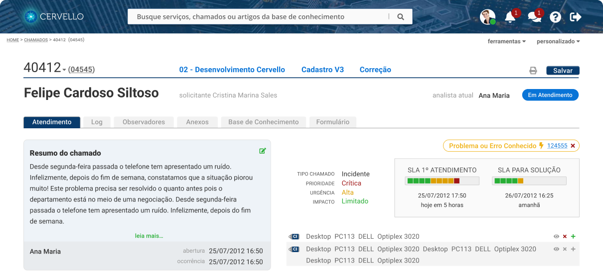
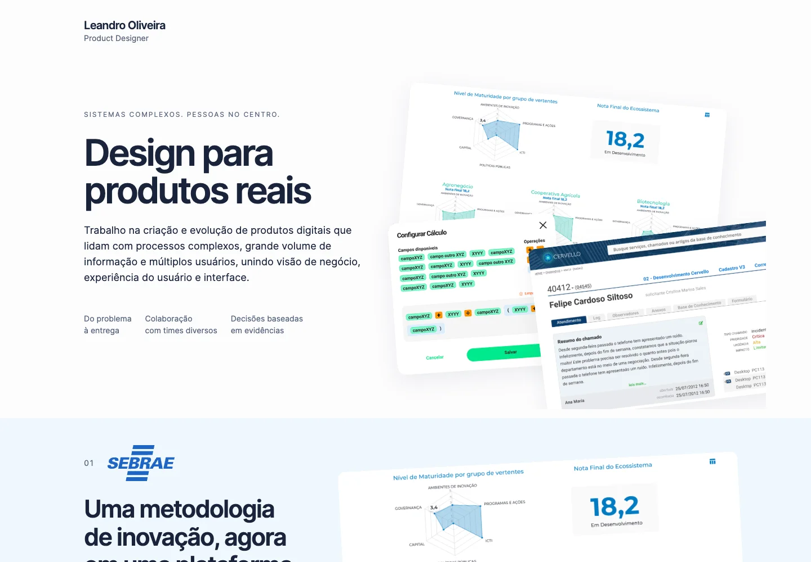

Meu trabalho começa por entender quem vai usar o produto.
Eu investigo como as pessoas usam software no dia a dia, onde encontram dificuldades e de que informações precisam para decidir. A partir disso, desenho ferramentas que ajudam profissionais a realizar tarefas com mais clareza e autonomia.



Projeto mais recenteDatacare
Conhecimento em dados, mais acessível para quem trabalha com eles
Desenhei uma plataforma de qualidade de dados, reunindo diagnóstico, ferramentas de tratamento e pipelines para apoiar o trabalho dos analistas.
Ver case completo — Datacare
Projetos anteriores
Meu portfólio
Até onde a IA pode ajudar a redesenhar um portfólio?
Redesenhei meu portfólio para testar como a IA poderia me ajudar nas decisões de design. Usei o ChatGPT para explorar composições e observei como elas funcionavam ao navegar pela página. Quando precisei comparar tons de uma cor, fiz os ajustes diretamente no código.
Conhecer o experimento